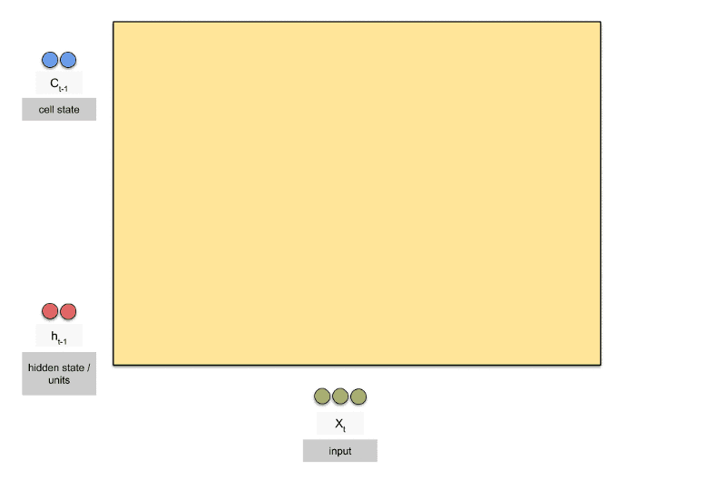

Recursive Neural Networks
- RNN
- LSTM
- GRU
RNN
Recurrent Neural Network
$h_t = f(x_t, h_{t-1})$
核心思想：结合当前信息和历史信息
Unrolled RNN
Capture short term information
RNN 逐个处理输入向量
将输入和先前隐藏状态组合成向量，向量经过激活函数 tanh之后，输出的是新的隐藏状态或网络记忆
Tanh active function
Vector transfer without Tanh active function
Vector transfer with Tanh active function
Sigmoid active function
As that gap grows, RNNs become unable to learn to connect the information
LSTM and GRU

LSTM

Forget Gate

Input Gate

Cell State

Output Gate

Core Idea of LSTM
Cell State

Forget Gate
Input Gate and Condidate Layer
Cell State Update
Output Gate
LSTM Variants
Add peepholes connection to all gates
Use coupled forget and input gates

Gated Recurrent Unit: Combines the forget and input gates into a single “update gate.”
Summary
Vanilla RNN
LSTM
GRU

Machine Learning
Applications and practices